MOCKUP SLOT · CURIE.MD
Healthtech · AI
Curie.md
An AI news and learning platform for clinicians, designed for the minutes between patients.
7+ YRS · 45+ PRODUCTS DESIGNED · NEW DELHI, INDIA · REMOTE-FRIENDLY · OPEN TO GLOBAL ROLES
Hi, I'm ![Tauseef Khan]() Tauseef — a senior product designer focused on UX strategy, AI experiences and design systems.
Tauseef — a senior product designer focused on UX strategy, AI experiences and design systems.
I take products from research and UX strategy through UI design, prototyping and validation to developer handoff. My work spans healthtech, SaaS, fintech and mobility, most recently AI products: a voice-first interviewer, a life-sciences LLM platform and conversational support.
CORE SKILLSFigures are from my résumé; the case studies show the decisions behind them.
Six product design case studies: start with the Panelist Survey App for measured outcomes, Gribb Tech for complex systems or Bentley Mulliner for craft. Sagan.AI and Ferma.AI are AI products; the Boilerplate Generator is design work done with AI.
A UX measurement program linking detractor feedback to design sprints. Onboarding informed by Jobs-to-be-Done and Amplitude, mobile-first question flows, and a system for 1,000+ surveys.
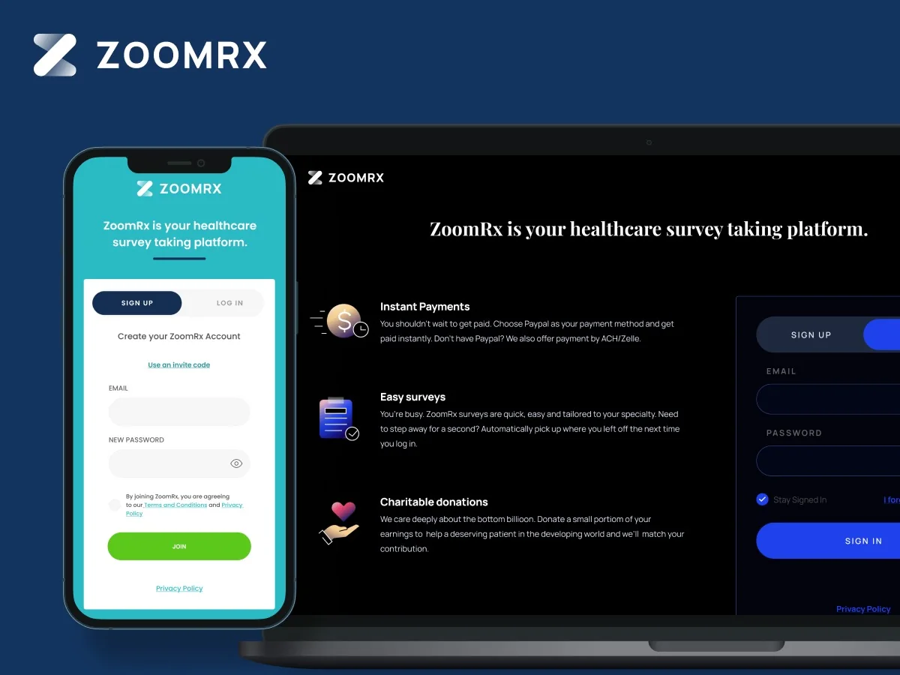
One data model, two faces: a risk dashboard for DHL-and-UPS-scale fleets and insurers, and a gamified driver app with gift-card rewards — on a weather-aware rule engine.
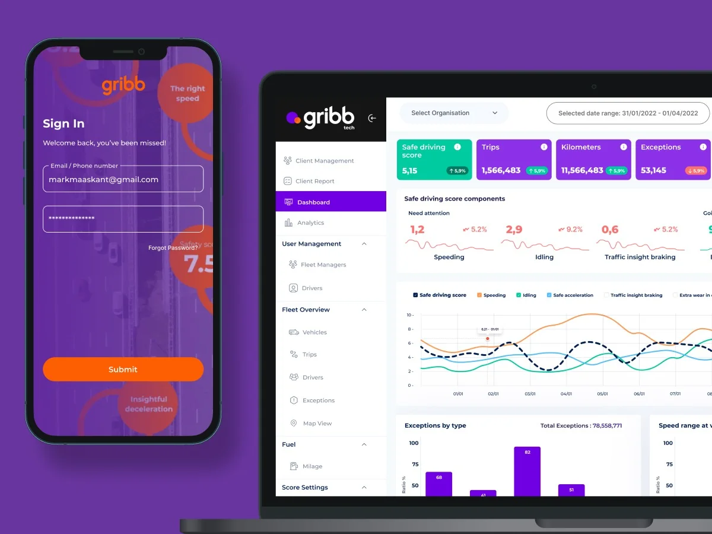
Bespoke-car configuration on showroom iPads — 1,500+ hand-registered PNG layers at 0.8 opacity doing what a 3D pipeline couldn't.
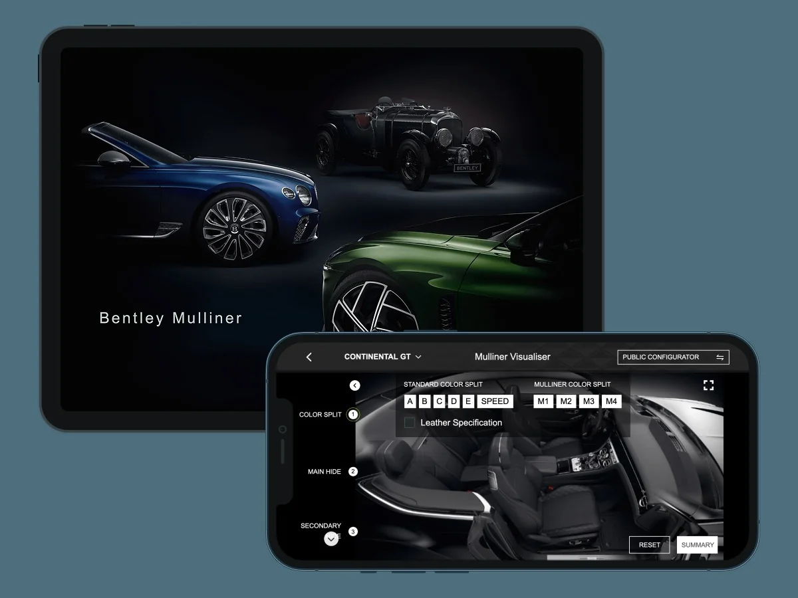
Voice-first survey UX for healthcare professionals — research, information architecture, Figma prototyping and user acceptance testing. Turn-taking, captions and recovery designed for real conversations.
UX strategy, information architecture and interaction design for a life-sciences LLM platform — including competitive UX benchmarking against ChatGPT and Perplexity, and answers structured around evidence.
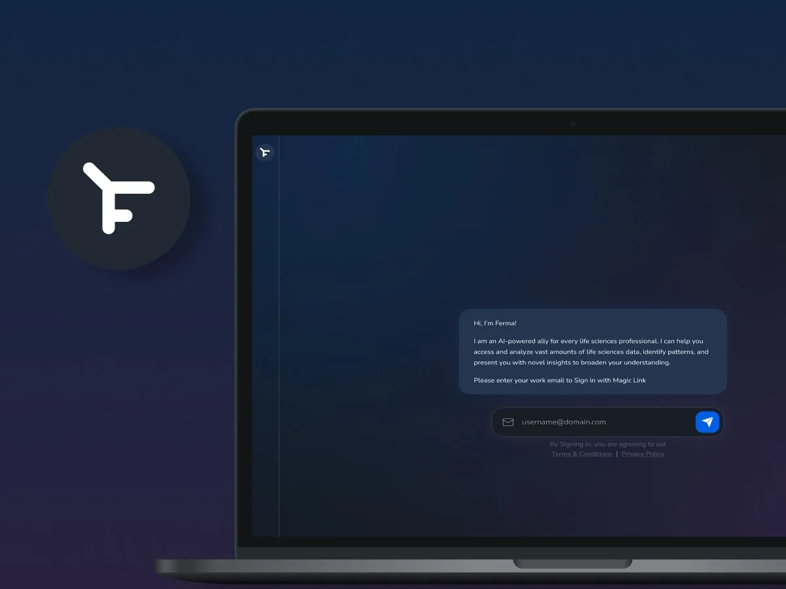
A design system packaged as an agent skill, then an orchestrated designer–evaluator pipeline that drafts survey screens from a Word document and grades its own output against a rubric.
An AI news and learning platform for clinicians, designed for the minutes between patients.

Role-based commerce and inventory workflows.
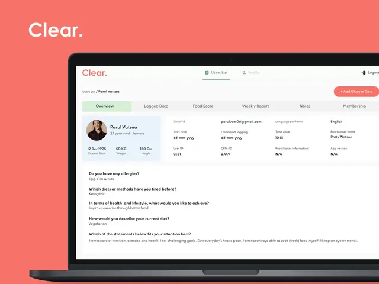
A nutrition and glucose tracking app for people managing type 2 diabetes.
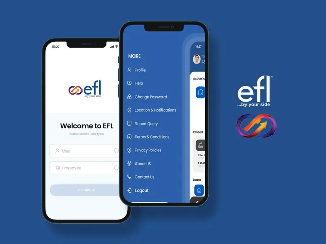
A loan app for small and medium businesses: choose a loan, apply and follow it from a phone.
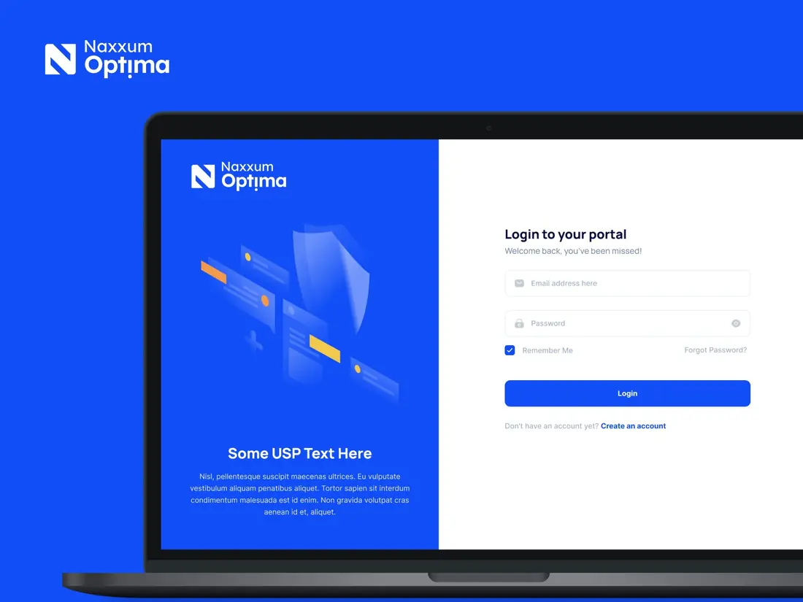
Additional project included in my résumé.
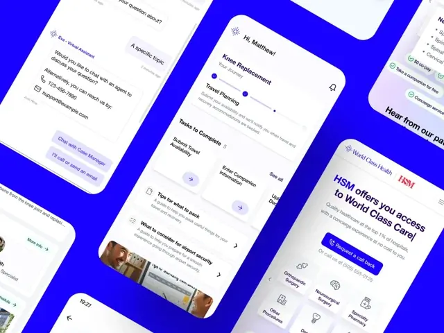
Brand identity, client microsite, patient-journey app, marketing and funding-pitch materials.

A one-stop app for booking shared transport in the Netherlands.
Multi-persona journeys and a Figma component library.

A marketplace app and website for buying and selling heavy machinery and raw materials.
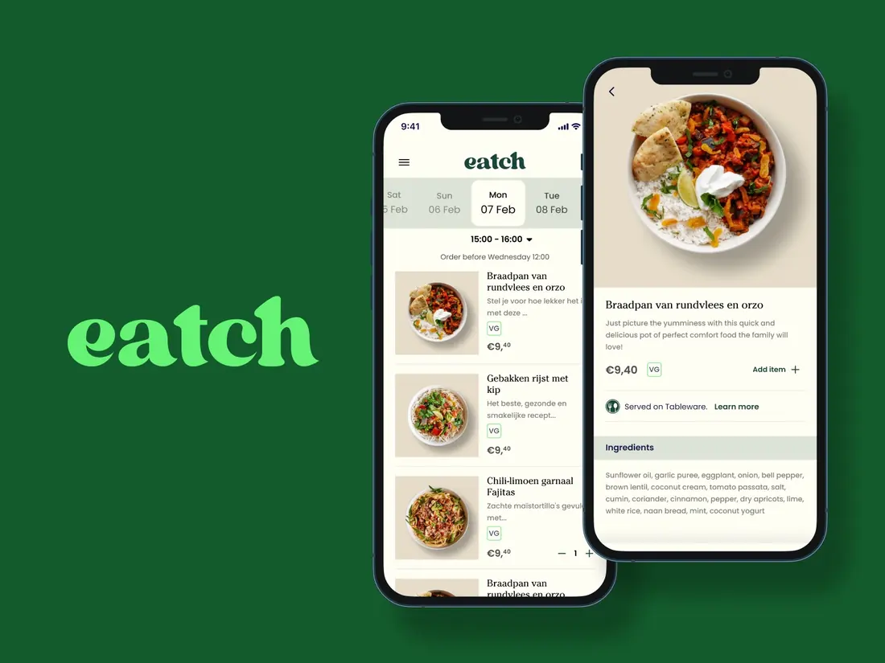
A meal ordering app: pick a day and a time slot, browse the dishes and see what goes into them.
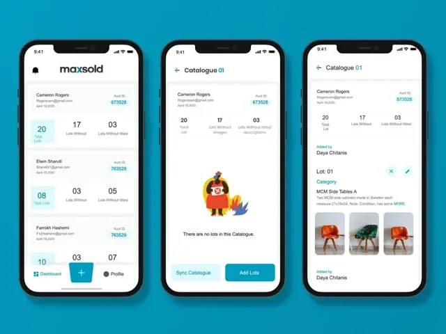
Accessible seller, bidder and buyer flows for the mobile auction app.

Redesigned the mobile app and website to improve the overall user experience.
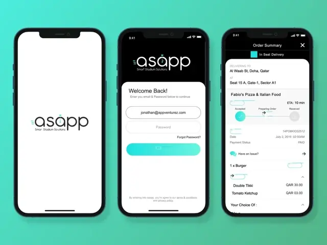
Customer, restaurant and driver journeys, including in-seat delivery.
Explored a personal AI assistant intended to answer phone calls on the user’s behalf.
Revamping brand identity and website UX to strengthen positioning and support patient engagement and retention.

An app to search, book and navigate to city parking, with facility details for every lot.
Additional project included in my résumé.
Additional project included in my résumé.

An app and website for ordering fresh, organically grown vegetables.
Designed and built a support bot, mapping flows through whiteboarding to reduce tickets and improve first-contact resolution.

A quiz-based learning app using interactive educational content.

A mentoring platform that connects young basketball players with professional coaches.

Tax filing and investment tracking for people and businesses in the US and Canada.

Fleet management with virtual keys: share, locate, unlock and lock vehicles from a phone.

A government-backed app and website for booking car and bike parking in South Delhi.

A crypto investing app built around expert-curated baskets of assets.

An app for finding, claiming and redeeming deals from nearby businesses.

A website presenting an outsourcing company's services, work and track record.

A job search app and website with simpler flows and a touch of gamification.

An app for booking personal consultations with astrologers.

A booking app for yoga classes, spa treatments and wellness services.
Product design expertise, supported by the tools I use to explore, build and deliver.
Product strategy, discovery, information architecture, end-to-end design and developer handoff.
User interviews, usability testing, journey mapping, interaction flows and iteration informed by NPS and behavioral analytics.
Visual hierarchy, responsive interfaces, mobile-first layouts and accessible interaction patterns (WCAG 2.1 AA).
Reusable components, design tokens, documentation and consistent patterns across web and mobile.
AI-assisted design, research and prototyping; agentic AI workflows that generate and evaluate screens; UX for voice, conversational and LLM products.
Cross-functional collaboration, stakeholder alignment, mentoring, design critiques and delivery.
Aligarh Muslim University
VIPS, Guru Gobind Singh Indraprastha University (GGSIPU)
Arena Multimedia
Google & Coursera
Interaction Design Foundation
Appventurez
The numbers case study: survey experience redesign at scale for healthcare professionals — NPS from −8 to +36 in a year.
The numbers case study: survey experience redesign at scale for healthcare professionals — NPS from −8 to +36 in a year.
Four numbers. The story is how they moved.
ZoomRx runs market research on healthcare professionals — physicians whose time is expensive, whose patience is short, and whose honest answers are the entire product. When I took on the survey experience, the platform's Net Promoter Score (NPS) was −8. Respondents were telling us, in the most direct metric that exists, that taking our surveys was a bad experience.
A year later, NPS was +36. That 44-point swing wasn't one redesign; it was a sustained programme of experience work:
The measurement program linked detractor feedback to design sprints and contributed to NPS moving from -8 to +36 in 12 months. EOSF collected 30,000+ structured responses. Patient Load completion rates increased by 24%; onboarding work grew monthly active users from ~400 to ~550 (+38%) and improved 90-day retention by ~19%.
A survey platform has an unusual property: its users are also its supply chain. If physicians dislike the experience, they respond less, answer worse, and eventually leave the panel — and the company's product (research data) degrades with them. NPS at −8 wasn't a vanity-metric problem; it was a leading indicator of supply risk.
The experience problems were structural. Surveys were long and cognitively expensive — dense grids, repetitive patterns, unclear progress. There was no systematic way to hear what respondents thought at the moment they finished. And with over a thousand live surveys authored across teams, quality varied wildly — the experience depended on who had built the survey, not on a system.
Asking respondents later what they thought produces politeness. Asking at the instant they finish a survey — while the friction is fresh — produces the truth. The End of Survey Feedback (EOSF) mechanism became the engine of the whole programme: 30,000+ responses that turned redesign priorities from opinion into evidence.
Drop-off didn't correlate with survey length as much as with density — the grids, the repeated matrices, the screens that demanded re-reading. Reducing effort-per-question mattered more than reducing questions.
No team can hand-polish a thousand live instruments. Past a certain scale, the only way to raise experience quality is to raise the floor — tokens, patterns, and question templates that make the good version the default version.
The EOSF programme came first, deliberately. Redesigning on intuition risked optimising the wrong friction; 30,000+ responses meant every subsequent change had evidence behind it and a measurement after it.
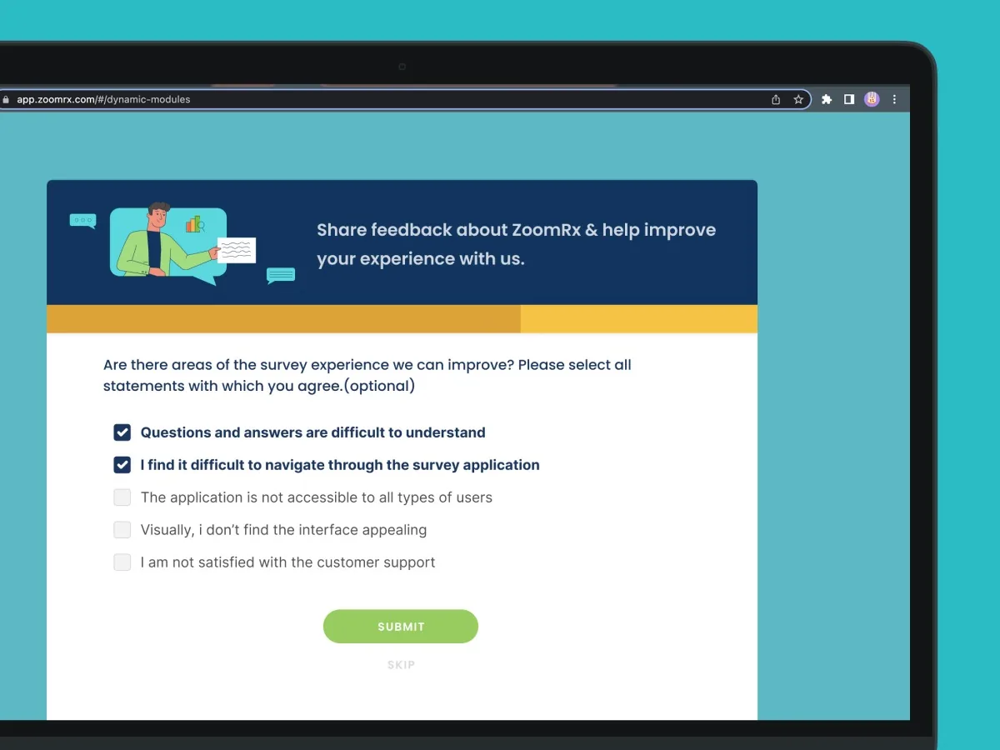
The second step: named areas of the survey experience to agree with, so a detractor score arrives with a reason attached. Both steps are skippable.The redesign targeted effort-per-question: simplified interaction patterns, clearer progress, breaking dense grids into sequenced steps.
The system's real users were the people building surveys at volume. It had to make the right pattern the easy pattern — templates and components that produce consistent experience without a designer in the loop. The system's rules are written doctrine, starting with its first principle: the physician is the hero; ZoomRx is the tool. Its discipline runs to the pixel — at one point, four visually indistinguishable navy variants that had drifted into production were consolidated into a single brand navy, on the record, with a date.
The Figma design system contains 200+ components, design tokens and WCAG 2.1 AA patterns for 1,000+ surveys across web and mobile. Its token architecture links primitive values to semantic roles and components; the source inventory also includes 439 icons and 249 illustrations. I packaged the system as Claude and Codex skills and plugins for agentic AI coding.
Onboarding was redesigned using Jobs-to-be-Done and Amplitude funnel/cohort analysis. Monthly active users grew from ~400 to ~550 (+38%), and 90-day retention improved by ~19%. Identity also became part of the design: panelists verify with their work email and complete identity verification from a persistent dashboard banner, with surveys held blurred until the account is activated.
The survey loop is designed by scenario, and every exit leads somewhere: finish a survey — see your earnings and the next study ("Earn $75 more"); get screened out — land on an apology that immediately offers alternatives; head home — find the next opportunity waiting. A respondent with time and willingness is the scarcest asset the platform has; the design refuses to waste one.
The dashboard is a working professional's earning surface, and it reads like one: survey tiles carry pay, time estimate, and "what you'll do" up front — respect for the respondent's decision, tile by tile — with early-access badges, guaranteed-pay variants, and honest unavailable states ("available again on…"). A verification banner tracks identity status at the top, and the platform's other faces sit one tab away: Surveys, Playground, Briefs.
A panel that only hears from you when you want data is a panel that stops answering. The platform earns visits between studies: clinical and case polls with community results, quizzes with explained answers, and the Playground — light engagement that keeps the habit alive without cheapening the professional context.
The dashboard quietly connects the portfolio: a $30 AI-moderated interview tile on it is Sagan — the interviewer I designed — being fielded through the survey platform, and the Briefs tab is Curie's content inside the panelist's daily surface. Three products from this portfolio, one screen.
Moderated HCP interviews and task-based usability testing translated six key UX insights into roadmap priorities. EOSF responses arrived continuously, while design sprints were linked to detractor feedback. The boards carry the iteration record: tile states, verification flows and the survey loop exist in versioned explorations.
QUOTE SLOT · a real quote about this project appears here once collected
The quality floor rose for every study ZoomRx fields — not just the ones a designer touched. And the platform became more than a survey queue: a verified professional community that earns, learns, and keeps coming back.
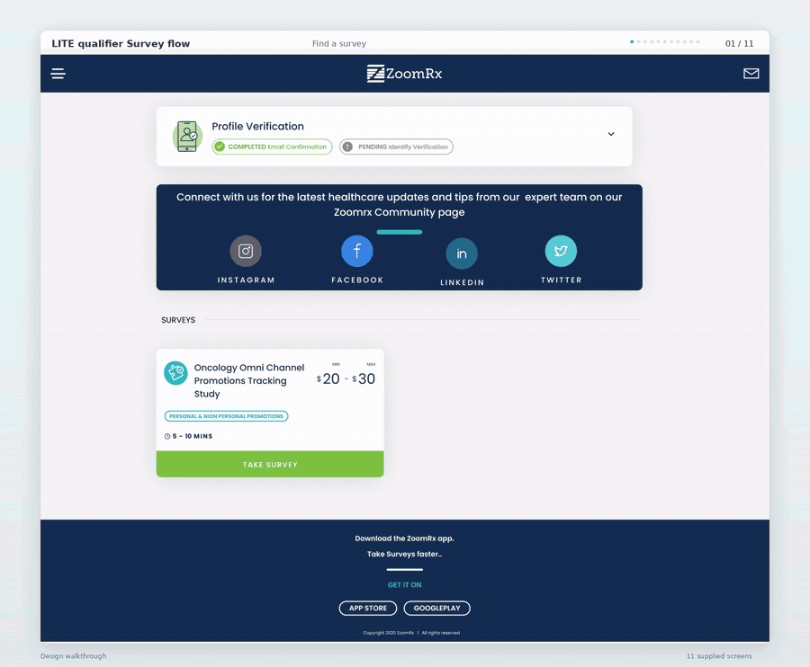
The qualifier survey flow end to end: finding a survey, the screener, the survey itself, and where a respondent lands afterwards.These are platform-level outcomes from a sustained team effort I drove the design of — not solo numbers.
At scale, the design system is the user experience. The most leveraged screen I designed was the template that shaped a thousand surveys I never saw.
Turning live Geotab telemetry from delivery fleets into a dashboard managers act on — and a driving score drivers actually want to improve.
Turning live Geotab telemetry from delivery fleets into a dashboard managers act on — and a driving score drivers actually want to improve.
Gribb's platform starts with a piece of hardware: a Geotab telematics device installed in delivery vehicles. It reports, live, how each vehicle is being driven — harsh braking, sudden acceleration, hard turns, idling, and more. For the delivery companies running these fleets — DHL and UPS among them — that stream holds the answers to expensive questions. Raw, it's unreadable.
As Lead Designer over two years, I designed both sides of that translation: the dashboard that fleet clients, insurers, and resellers used to understand every vehicle, driver, and trip — and the driver app that turned safe driving into a score worth competing for, with real rewards behind it.
The honest scope of this product is large: multi-tenant client management, a configurable rule engine, fleet analytics, fuel economics, exception maps, shift management, damage reporting, driver gamification. The design job was to make sure no single user ever felt that size:
A fleet operator cares about a small number of questions: who is driving dangerously, which vehicles need attention, and where the operation is losing money. The Geotab device answers all of them — but in the form of thousands of raw data points per vehicle per day. No operations manager at a delivery company reads telemetry, and no driver changes how they brake because a sensor logged an event.
The gap between what the device knew and what a client could act on — that gap was the product.
Told from both seats — the manager's and the driver's. Same telemetry, two working lives.
A fleet manager looks at driving behaviour to hold the operation accountable. A driver looks at it to know how they're doing. One audience needs oversight; the other needs motivation. Designing one interface for both would have served neither — the data had to wear two faces.
Nobody watches telemetry. People respond to things that happen — a collision, a harsh-braking spike, a vehicle trending toward a fault. The dashboard had to surface events and exceptions instantly and let ordinary operation stay quiet.
A driving score changes conversations between managers and drivers — and drivers push back on numbers they can't trace. The score had to be legible (built from named events like harsh braking and idling, through rules anyone could understand) before it could be motivating. Gamification only works on top of a score people believe.
The two hardest problems of the project sat next to each other: defining the rule engine — deciding how driving would be judged at all — and designing a dashboard that could hold this much product without collapsing. The gamification system and the plate-scan check-in were hard in a different way: they had to make sophisticated machinery feel effortless to the person using it.
The client dashboard and the driver app were designed as one system serving opposite needs. The dashboard answers the manager's questions: who is driving dangerously, which vehicles need attention, what does the fleet look like tonight. The app answers the driver's: how am I doing, where do I stand, what's my score. Same telemetry, same rule engine, opposite framing.
We didn't hard-code what "bad driving" means — because it doesn't mean one thing. Behaviour events flowed through a rule engine where every rule carries context: the same harsh braking scores differently on a snowy night in a truck than on a dry highway in a van. Road type, vehicle category, day versus night, even weather — all weighted, all configurable per client, down to the score bands and the colours that represent them.
A score that judges people needs a way to be wrong. If a driver believed an exception was unfair — the speed limit was different, the idling had a reason — they could raise a query from the app, state their case, and have it land with their manager, who reviews the trip and marks the query valid or invalid. Valid queries correct the record.
Surveillance data has a dignity problem: a system that only reports drivers to their managers gets resented and gamed. So the driver app flipped the framing. The score became a progression system — levels, streaks, milestones — with leaderboards ranked against people drivers actually know ("best 5% in your hub", not an anonymous global list), 30-second improvement lessons that themselves earn points, and coins that redeem into real Amazon gift cards.
On the driver's side, everything hangs off one unit: the shift. Check-in by scanning the vehicle's number plate — the camera does the work, because a driver starting a route shouldn't be fighting a form. The check-in binds driver to vehicle, which is what makes per-driver scoring possible at all on shared fleets. Then the pre-vehicle safety check, the scored trips, any damage reports (tap the vehicle diagram where the damage is, add photos), and check-out. Each shift closes with its own score, its own condition record, its own paper trail — one driver, one vehicle, one accountable session.
Fleet overview → vehicles → drivers → trips → exceptions, each level opening into the one below, down to a single braking event on a map. Around that core: live fleet map, fuel economics, score comparison between any two groups or periods, and reporting that leaves the building — exports, scheduled emails, and a designed weekly behaviour report that risk-bands the fleet for clients and insurers.
Two rules governed the whole product:
The same two rules hold on the driver's side: the score is always one glance away, and tapping it always shows you why it is what it is.
The product shipped in versions — Drivers v2 and v3, Trips V2, Check-in/out V2, Reporting v3 — and went through a full rebrand along the way. Design here wasn't a phase before build; it was a two-year loop of launching, getting feedback, and revising. The versions themselves show what that feedback taught us:
Two feedback channels were also built into the product itself:
QUOTE SLOT · a real quote about this project appears here once collected
Fleet behaviour stopped being invisible:
What had been a raw telemetry feed became the operating picture of the fleet.
The product also sold. What I remember from inside the project: the platform we built was strong enough to bring major delivery companies — DHL and UPS among them — and insurance companies on board as clients.
The market's verdict, though, is public. Gribb was acquired by Moove, the European connected-mobility group — and Moove has since become part of Netradyne, a global leader in AI-powered fleet safety. The product survived two acquisitions with its purpose intact. Netradyne's core pitch today — recognising and rewarding safe driving in real time, not just flagging what goes wrong — is the same bet this platform made in 2021.
This was agency-side work; post-acquisition usage data sits with Moove, Netradyne, and their clients. What I can speak to is the system's design logic and what I observed while building it.
Data products fail at the interpretation layer, not the collection layer. The most valuable design work here wasn't visualising data — it was deciding what each audience needed the data to mean: accountability for the manager, motivation for the driver. Same numbers, two designs.
A real-time configurator for bespoke luxury vehicles, designed for iOS.
A real-time configurator for bespoke luxury vehicles, designed for iOS.
None of what you're about to see is 3D. That's the whole story.
Bentley Mulliner is the bespoke arm of Bentley Motors. Customers don't pick from a catalogue; they specify a car. The existing iOS app, built to showcase the brand, didn't serve that decision: it described vehicles instead of helping anyone configure one.
I led the redesign from a static reference app into a real-time decision tool. Customers and Bentley executives could now build a complete specification, see it rendered immediately, and pass the result to a dealership for pricing. The work covered UX strategy, information architecture, high-fidelity design, and a rendering technique developed with engineering that gave us photoreal output without 3D — a constraint that ended up defining the product.
After launch, the app became the default surface for in-showroom configuration. Dealer follow-ups became structured rather than improvised: every build left the room as the same structured summary, ready for pricing.
For a Bentley buyer specifying a Mulliner build, the configuration moment is the most important decision of the purchase. Spec choices shift the price by significant amounts, and once committed, materials enter a production pipeline that takes months to reverse. The cost of a wrong call is high — both for the customer and for Bentley.
The original app was built to communicate craftsmanship, not to support that decision. It showed renderings of completed cars and reference imagery of trim options, but customers had no way to see their own combination. Reaching confidence required either imagination — picturing a colour from a swatch and a stitching pattern from a flat image and combining them mentally — or a multi-stop dealer conversation that often stretched across weeks.
Dealerships were never under-equipped — physical swatches, material samples, and reference vehicles were all on the floor. What no showroom could offer was the customer's own combination, assembled: this colour on this body with this interior and this stitching. That composed view lived only in the customer's imagination, and confidence built slowly because of it. The digital experience, meanwhile, showed finished reference cars — it communicated the craft without supporting the decision in progress.
The product moved from being a brochure to being part of the sales process.
Three findings came out of stakeholder conversations, workflow reviews with Mulliner-trained sales advisors, and internal usability walkthroughs. Each one mapped to a product direction.
A Mulliner spec involves combinations of finishes most people have never seen together. Showing a swatch and a description is not the same as showing the car. The product had to render every choice immediately and unconditionally — no apply button, no preview state, no waiting.
The first prototype let users jump between any option in any order. In review, this didn't help anyone: customers got lost, and advisors had to step in to guide. Constraining the experience into a sequence (model → exterior → interior → wheels → personalisation → review) was one of the more important calls in the project, and not the obvious one.
What sales advisors valued most wasn't the configurator itself — it was what came out of it: a clean build summary they could hand to the dealership and production team without any translation or rework. The screens exist to produce that document. Once we understood this, sharing stopped being an export feature buried in a menu and became a core surface of the product.
This is the section where the product took shape. Four decisions defined the experience.
The original brief assumed a 3D rendering pipeline. After evaluating options, the team concluded that real-time 3D was not viable at the visual fidelity Bentley required. Load times would have broken the experience; reducing fidelity would have broken the brand.
What we didn't do: real-time 3D. Not because it was hard — because it couldn't hit Bentley-grade fidelity on showroom iPads, and Bentley does not accept visible quality loss.Instead of dropping fidelity, we changed the technique:
The result felt indistinguishable from a render, loaded immediately, and held up on older iPads.
One greyscale detail layer — lighting, reflections, shading — at 0.8 opacity over a flat colour. Change the colour; the detail never changes. Slide the opacity to see why 0.8 was the number.
Free-form configuration was the obvious default, and the one we built first. Usability sessions made the case for replacing it. Customers who could touch anything spent more time wandering than committing; the lack of structure pushed advisors into a coaching role they weren't in the room to perform.
The guided flow (model → exterior → interior → wheels → personalisation → review) gave the experience a rhythm and let advisors step in at predictable moments. We kept the ability to step back through earlier decisions, but removed the ability to skip ahead. The customer always saw the next decision and never lost their place.
Sharing isn't a flourish at the end of the flow; it's the point. The Review screen is where the configurator earns its keep. A finished build generates a structured summary that goes to the dealer as a single tap, in a format the build team can consume directly.
This decision changed the information architecture. Sharing isn't tucked under a menu; it's the primary action of the final screen, and it's why the product exists.
A Mulliner sale spans multiple visits. Builds had to survive between sessions, on the same device or another one. We added a lightweight account model and a build history that an advisor could pull up at the start of the next meeting, with full version state intact.
Home → Browse models → Select model → Visualizer (Exterior → Interior → Wheels → Personalisation) → Review → Share
The visualizer sits at the centre of the product. Every other screen either gets the customer there or handles the artefact it produces.
The car is always visible. No control covers more than roughly a third of the screen at any time. Choices commit on tap; there is no apply button. Material and colour previews use a single lighting setup so customers can trust the consistency of what they see across selections. We worked within Bentley's brand guidelines, which kept the primary action identical on every screen — customers always know where the next step is.
Validation ran in two channels: moderated usability sessions with Mulliner-trained sales advisors and product stakeholders, and side-by-side comparisons of interaction variants built within the team.
The most informative result of testing wasn't a metric — it was a change in how people behaved. In the free-exploration version of the prototype, advisors kept interrupting the customer to guide them through options. In the guided version, the same advisors stopped narrating and started watching. That shift, seen across multiple sessions, was the strongest argument we had for replacing open navigation.
Other iterations from testing:
The configurator became the default surface for in-showroom Mulliner conversations. The iPad sat between customer and advisor as the shared surface for composing the complete build — working alongside the physical samples on the floor, not replacing them.
Submissions to the build team became uniform. Every build left the room as the same structured summary — the same option codes, the same ordering — which meant less verification work for the production team downstream.
Customers left sessions with a build they had specified themselves rather than a build the advisor had narrated to them. The qualitative shift that mattered most was the decline in requests to physically see a reference car before committing — the configurator was the reference.
Bentley later pulled the app from public availability, for a practical reason: open access meant anyone could send a build request to a dealership, and many of those requests were casual — sent on a whim, with no response when dealers followed up. Restricting the app to executives and showroom use put it back in the hands of serious buyers, in the room where builds are actually specified. It had a second benefit: on showroom iPads, the compact-mobile-screen problem stopped mattering — the interface had the space it worked best at. The move cut off any public-facing metrics, but the product was retained exactly where it earned its keep.
This was an agency engagement, which means I don't have access to post-launch telemetry from Bentley's side. I can speak to the qualitative shifts I observed in usability sessions, dealer feedback, and stakeholder reviews; I can't claim a specific completion-rate lift or transaction-time reduction. The numbers I would want — sessions per build, share-to-pricing time, build-to-order conversion — sit on Bentley's side and weren't part of the contractual scope.
A portfolio piece is more useful when it's honest about this than when it borrows credibility from numbers nobody can verify.
Real-time visual feedback is the most important single factor in a high-value configurator. Every other usability improvement I made on this project, combined, was smaller than the gain from removing the gap between choose and see.
A performance constraint can become a design technique. The layered-PNG system started as a workaround for an absent 3D pipeline; it ended as a faster, sharper rendering approach than 3D would have given us at this fidelity.
The most valuable part of a luxury digital product is what isn't on screen. Everything we removed — the free-form navigation, the apply button, the swatch-only state, the menu-buried share — contributed more to the experience than anything we added.
An AI interviewer for healthcare market research — a spoken conversation that delivers qualitative depth at survey scale.
An AI interviewer for healthcare market research — a spoken conversation that delivers qualitative depth at survey scale. Participation up roughly 30%; revenue from $0 to $2 million.
That exchange is the product. Everything below exists to make it feel natural.
Market research has always traded depth for scale. Sagan refuses the trade: it's an AI interviewer — it speaks, listens, probes, and follows up, holding a real research conversation with physicians and patients at whatever scale a study needs. ZoomRx has been AI-first from the start; Sagan is that conviction applied to the interview itself.
I designed the interview experience across web and mobile: the conversation and its turn-taking, the captioning system, the switches between spoken and on-screen answers, and the recovery paths for an audience that gets interrupted for a living.
Market research offers two bad options. A qualitative interview delivers depth — but needs a trained human moderator, a scheduled call, and budgets that keep samples small. A survey delivers scale — but flattens open answers into typed fragments from respondents racing to finish. The depth-versus-scale tradeoff is structural, and physician time makes it worse: the people whose answers matter most have the least patience for either format.
Because ZoomRx designs the studies itself — the drafts, the paths, the logic — an AI could credibly hold the moderator's chair: the conversation probes freely inside a structure we already know.
When someone speaks to a machine, the twin anxieties are "did it hear me?" and "should I be talking now?" Every state — listening, processing, moderator speaking — had to be explicit, or respondents talk over the AI, repeat themselves, and trust collapses.
Spoken words disappear the moment they're said. So the screen keeps the record: captions while the AI talks, and a history of every answer already given. If you missed something or want to check something, it's there.
Talking is the richest way to answer "why." But when a question involves something to look at — an ad, a reference image, a set of options to compare — voice alone fails: you can't speak a picture. Those moments move to the screen, and the design had to know which was which, question by question.
Sagan doesn't read a questionnaire aloud — it runs the interview. It introduces itself, asks, listens, and probes with follow-ups the way a good moderator digs into an interesting answer. We could let it do that safely because we design the studies ourselves: the AI probes freely inside a structure whose every path we already know.
A voice conversation fails the moment nobody knows whose turn it is. Every state is explicit — Preparing your interview room. Connecting your moderator. Setting up audio. Listening… Processing your response… — with a persistent indicator showing whether the moderator or you holds the floor. Even the pre-interview sequence is deliberate ritual: it frames what follows as a meeting, not a form.
Every state is explicit, and every caption is eight words or fewer. Step through the sequence a respondent actually sees.
Everything Sagan says is captioned on screen — and each caption holds a maximum of eight words, so the text stays big enough to read at a glance. Nothing gets missed, with or without sound.
Open-ended answers are spoken. But a 1–6 rating is a tap, a stimulus is an image on screen, and a multi-select is a checklist with typed input where the options don't fit. The conversation switches modality to whatever makes the answer most accurate.
Clinicians get interrupted. Sagan notices silence ("Are you there?"), offers breaks, saves progress — and when the respondent returns, it recaps what was already discussed before continuing. The interview ends properly too: completion, the honorarium payment initiated, and a transcript-style history the respondent can revisit.
Profile verification → the study card with its honorarium → guidance (find a quiet spot; don't share personally identifying information) → the room-preparation sequence → the conversation → completion, payment initiated, dashboard. One arc, identical across web and mobile — the interview is the product on both.
A transcript-style view lets respondents recall every answer they've given. The conversation is never a black box, and stepping away never means losing your place.
Two problems were the hardest, and both came from the same place: in an AI interview, the user gets lost easily.
The first: whose turn is it? In early versions, respondents couldn't tell when the AI was speaking, when it was their turn — or why there was silence while the AI prepared a follow-up. Every one of those gaps broke the conversation: people talked over the moderator, repeated themselves, or sat waiting for nothing. Defining the full set of states — moderator speaking, listening, processing, preparing the next question — was the most complicated design work in the product, precisely because human conversation makes turn-taking invisible and an AI conversation has to make it explicit.
The second: how much should the screen say while the AI speaks?
That sequence — audio-only → captions → capped captions + history — is the product's learning, in shipped form. And the two threads together — the turn-taking states and the caption system — are why the interview feels effortless: the hardest work in the product is the machinery you barely notice.
It also outgrew its starting point. Sagan has since grown into Sagan Agents — ZoomRx's agentic operating system for pharma insights, spanning archive intelligence, agentic market research, and strategic insights agents — and the public page carries real HCP feedback describing the interviews as concise, straightforward, and well-directed. The interview experience I designed is where that platform began.
ZoomRx work: the 30% figure is the shareable headline; underlying data and client specifics remain internal.
Changing how people answer — speaking instead of typing — moved the results more than years of refining what they were asked. The input method turned out to be the biggest design lever in the product, bigger than any screen-level improvement.
The principles Sagan Agents now markets as human-in-the-loop — a process you can see, a conversation you can intervene in, answers you can trace — were in the interview's DNA from the start: visible turn-taking, bounded probing, a history you can always check. Designing trust into the first product turned out to be designing the philosophy of the platform.
An AI intelligence platform for life sciences — designing how AI answers high-stakes pharma questions, before the industry had patterns for any of it.
An AI intelligence platform for life sciences — designing how AI answers high-stakes pharma questions, before the industry had patterns for any of it.
Pharma strategy runs on questions: which trials read out, what a competitor's pipeline holds, how a drug performed, what happened at a conference. The teams asking — competitive intelligence, business development, medical affairs — used to pay for answers in analyst-days. Ferma answers in seconds, with the evidence attached.
I designed how it answers. The response system that turns AI output into something a pharma analyst can defend — structured clinical answers, visible sources, comparison tables — and the harder second act: the argument that a chat box was the wrong container for research, and the design of the workspace it should become. Along the way: the collaboration layer, both light and dark themes, and the mobile version.
The timing is the point. This was built in the early ChatGPT era, when nothing was settled — how an AI answer should look, how sources should show, what happens when a question is too big. Every convention had to be decided from first principles, and the boards record those decisions being made.
Life-sciences teams sit on enormous, fragmented information: trial results, competitive moves, regulatory events, conference intelligence. Getting an answer meant knowing which source held it and having the time to dig. Generic large language models offered speed but failed the domain: a confident answer with a wrong drug name is worse than a slow answer.
And underneath that sat the design problem with no borrowed solution: nobody knew what an AI answer to a clinical question should look like. Not how long, not how structured, not how sourced, not what to do when the question returns three thousand results. The interface conventions didn't exist. We had to design them.
An analyst quotes Ferma's output in reports read by clients. Every response needed a visible chain back to evidence — the interface had to support verification as a first-class behaviour, not a footnote.
A chat flow answers one question at a time. Real research is non-linear — analysts follow several paths, abandon some, come back to old insights and connect them. Constrained to chat alone, they were manually copying pieces of answers into documents to use later. The product had to become a place where research accumulates, not just a place where questions get answered.
An empty search bar is intimidating when the question isn't framed yet — and a badly scoped question returns three thousand results nobody can use. The design had to help on both ends: suggesting what to ask before typing, and helping narrow the ask when it came back too big.
No patterns existed to borrow — so this section reads the way it happened: a log of first-principles calls, each recorded on the boards as it was made.
Instead, every answer type got a designed anatomy. Structured summaries with named fields (Efficacy, Safety, Drug, Indications) where the ask was specific; narrative layouts with a strict typographic hierarchy where it was open-ended; long answers split into short points with a background summary up top and drug names bolded; multi-result answers as collapsed cards — with the truncation call recorded on the board at the moment it was made: show the collapsed view, one field visible.
Sources are part of the response, not an appendix: citation chips on every claim-carrying block, and a sources panel — fifty references deep when it had to be — with search built in. We explored the panel's form deliberately: paginated at five, at ten, scrolling, scrolling-plus-pagination, laid side by side and compared before choosing. The design bet underneath it all: for this audience, verifiability is usability.
Broad questions got a designed response of their own: the AI explains the scope problem and offers tailored ways to narrow — by category, time period, specific study, demographic, outcome — written as help, with concrete example questions. And before any question is typed, the empty state suggests what's worth asking, because a blank box is a wall when the question isn't framed yet.
Analysts compare things for a living — trials, drugs, readouts. So comparison isn't a paragraph; it's a table: named rows (Phase, Enrollment, Arms, Efficacy, Safety, Conclusion), two entities side by side, sources attached. And the table earned its own iteration from real feedback: expanding truncated cells one by one was too many clicks, so we added Expand Content to open them all at once — and renamed the old Expand to Fullscreen so the two couldn't be confused.
As the product matured, I wrote the argument that the chat paradigm itself was the ceiling — a document proposing what Ferma should become: workflows and tasks as the core concept, with agent selection removed as a user burden (an orchestrator routes to agents invisibly); profiles — business development, competitive intelligence, scientific communications, new product planning — each carrying pre-built key tasks; and spaces where highlighted responses, insights, and charts accumulate per goal, get compared and tracked, and turn into shareable reports. Chat remains how you ask; the workspace is where research lives.
This is the section other case studies can't have, because the work happened before the conventions did. What the boards show being invented, decision by decision:
The boards also hold the arc: early light-theme wireframes evolving into the shipped dark-theme product, the theming system that kept both alive, and the workspace direction pointing at what came next. The product's history is legible in its own design files.
The design boards are themselves the validation record — decisions were made in public, on the canvas, with their reasoning attached:
Questions that cost analyst-days became questions that cost seconds — answered in formats built to be scanned, compared, and defended, with the evidence one glance away. The response conventions designed here became the product's foundation, and the workspace argument shaped where it went next.
The public arc says the rest. Ferma is today a dedicated ZoomRx business unit with its own platform family — conference intelligence and agentic workflows — publicly positioned against the industry's incumbent data platforms and, per its own site, trusted by 19 of the top 20 global pharma companies. The answering experience I designed is where it began.
Ferma is ZoomRx work. Specific performance data and client details stay inside ZoomRx; this case study describes the design reasoning at the level I can share.
And the bigger one: when the container is wrong, the senior move is to say so in writing. The You-centric document argued that a chat box couldn't carry real research — with a designed alternative attached. Formats and screens age; the willingness to challenge the paradigm you're working inside is the skill that transfers everywhere.
Packaging a design system as an agent skill, then building the pipeline that uses it: a survey draft in, reviewed on-brand screens out, graded against a rubric before a human ever sees them.
The design question underneath: what has to exist before a machine can produce work a designer would sign off on?
Most of this case study is a judgement call about where design belongs in an automated pipeline — and one reversal I had to accept.
A ZoomRx survey draft arrives as a Word document of roughly a hundred questions. Between those questions sit the boilerplates: the instructional, orienting and transition screens that tell a physician what is about to happen. They are not questions, they carry no data, and they get designed by hand for every study — which means they are the first thing to slip when a team is busy.
I built two things. First, the ZoomRx MR design system packaged as a skill: tokens, components, icons and golden structures written so a model can compose a screen without guessing values. Then the Boilerplate Generator, a plugin that reads a draft, decides which boilerplates are worth designing, drafts each one, and has a second agent grade it against a rubric until it clears a bar — with a human gating both the selection and the final output.
The version before this one worked and was still wrong: one context window did everything, so long runs blew the window and the model started emitting nonsense. A run took around 30 minutes and ~110k tokens for 7–10 boilerplates, the sub-agents were improvised at runtime so behaviour drifted between runs, and the evaluator accepted work with "only trivial nitpicks" — a judgement call dressed as a standard. We restarted from a clean slate, carrying the design intent and nothing else.
Boilerplates are the easiest screens in the product and the most repeated. Hand-designing them does not scale, but automating them naively produces the thing every designer fears: output that is technically on-brand and visibly wrong — an illustration forced onto a one-sentence screen, a drug name shouting in a pill, a paragraph quietly reworded by a model that thought it could write better than the regulator-approved source.
The real opportunity was not speed. It was the quality floor: if the system can hold a bar without a designer in the loop for every screen, then the designer's time moves to the screens that deserve it.
The first version derived its visual rules from the legacy codebase and from the draft text. That produced values without meaning. The fix was to build the design system as a skill first: three token tiers where the semantic layer carries the role (text.primary, surface.canvas, button.primary) rather than the value, so an agent picks tokens by intent instead of copying hexes. The same repository holds the icon library, the illustrations and golden structures, so an agent composing a screen has the real inventory rather than a description of it.
This is the lesson I most had to be argued into. I kept deriving design from the source text: read the boilerplates, infer the patterns, write the token set, and let the screens follow. My design-leadership partner's position was the opposite — design the screens on a canvas first, react to them, and derive the rule set afterwards. He was right. The text-derived layer asserted visual opinions ("one white card") that nobody had designed or reacted to, and was internally inconsistent — it cited three different boilerplate counts in three sections of the same document. We retired it and rebuilt top-down.
The first loop had the designer and the evaluator grading by the same criteria on the same model, which is not a review: it is a model approving its own reasoning. Divergence had to be designed in deliberately — a different model, criteria the designer is never told to optimise for, and a scorecard rather than a verdict.
The orchestrator became a conductor: it runs the pipeline, holds the human conversation, spawns sub-agents and reads their short reports — and never does the heavy work itself, so its context stays lean. Three sub-agents (brief writer, designer, evaluator) each run in their own context window and are defined as files, with their model, tools, scope and persona declared once. Because each is specced once and reused, the designer behaves identically across every boilerplate and every run.
Who gets which skill became a design decision rather than a configuration detail. The brief writer gets the draft-parsing and study-type knowledge. The designer gets the tokens, the composition rules and the brand-asset server. The evaluator gets the same tokens and canonical screens — so it grades against the same target the designer aimed at — plus the rubric and a set of "look out for" criteria the designer never sees, on a different model.
Rather than guess which layouts were needed, I ran the parsing step across 14 real drafts to pull out 67 in-scope boilerplates with their verbatim text, then classified that corpus from first principles. It collapsed into five compositional archetypes — Statement, Structured List, Asset Hand-off, Composite, Comparison Matrix — and the distribution settled the priorities: 76% are Statements, a single short paragraph on a card. Get that one screen right and three-quarters of all output is right.
Functional intent (inform, instruct, prepare, orient, transition) does not drive layout, so it became a second axis that tunes tone, emphasis and whether an illustration is allowed at all. Density became a third. Five archetypes across those axes reduce to roughly eight canonical screens and a component inventory of about fifteen blocks.
Draft writers have one emphasis tool in Word, so bold arrives carrying three different intents. Treating them identically — the earlier behaviour — turned every screen into a field of pills. The rule separates them: a drug or molecule name is an entity and takes a muted tag with the border carrying the weight; a therapeutic area is a descriptor and takes inline bold inside the sentence; a placeholder takes its own treatment so dynamic content stays visible as dynamic.
The evaluator scores each dimension 0, 1 or 2 and must attach an actionable critique to anything below a 2. A screen passes only when no dimension scores zero and source-text fidelity and emphasis correctness each score a full 2. Those two are correctness, not quality: the visible text must be an in-order subsequence of the source, with nothing added, removed, reordered or rephrased. The remaining dimensions — typography and token compliance, cohesion with the canonical screens, illustration relevance, and consistency with the screens already approved in that run — can carry a partial.
Two gates, both deliberate. The first is after classification: a human confirms which boilerplates are in scope before anything is designed, because the cheapest error to fix is a screen that should never have been drafted. The second is after the loop: a human reviews the finished screens and, if they are wrong, says so in plain language — and the orchestrator re-enters the loop with that feedback as context. The outer loop is written into the orchestrator rather than left to the person's initiative.
A sizeable set of boilerplates is deliberately out of scope: consent and privacy screens, anything ending in a yes/no attestation, adverse-event terminology, screen-in and screen-out copy, welcome and post-survey screens. These are detected and skipped rather than attempted. Knowing what not to automate was as much of the design work as the rest.
The project ran through four revisions and three working sessions before it was worth keeping, and the record of that is itself an artifact: a written history exists so the superseded folders could be deleted without losing the reasoning, and a feedback log captures the objections as they were raised.
Dog-fooding was the useful move: the parsing skill had to work well enough to produce the corpus that the design layer is built on, so the pipeline validated one of its own parts before anything downstream existed.
QUOTE SLOT — a real quote about this project appears here once collected
The design system skill is built and in use. The pipeline is specified end to end, the orchestrator and parsing skills are written, the corpus and taxonomy are the agreed source of truth, the emphasis rule is authored and the rubric exists in V0.
This is V0 and I will not overstate it. The eight canonical screens are being designed now; until they exist, the composition and token skills are honest stubs rather than finished rules. The three agent files are specs, the golden data set is not built, and the pipeline does not yet run end to end. There are no outcome numbers here — the only figures I can stand behind are the old version's costs, which are the baseline this is designed against, and the corpus counts. I would rather show the reasoning at this stage than claim a result that has not happened.
Automation does not remove design judgement; it relocates it. Every decision a designer would normally make per screen has to be made once, in advance, and written down precisely enough for a machine: what emphasis means, when an illustration is allowed, what "good" scores. The rubric is the design work. And a system that reviews itself needs that review to be genuinely adversarial — different model, different criteria, scorecard not verdict — or it will simply agree with itself.
No matching actions. Try a project name, “theme” or “CV”.